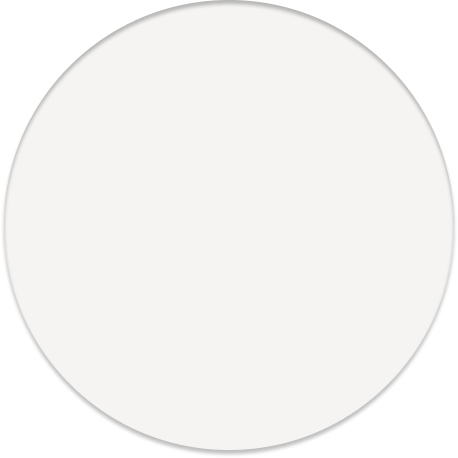
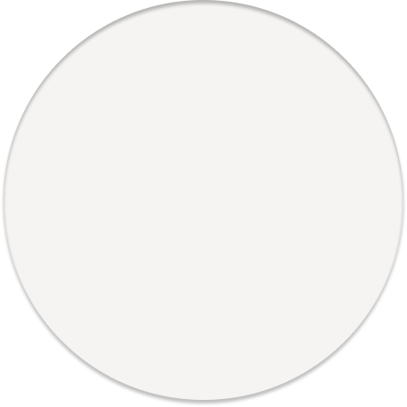
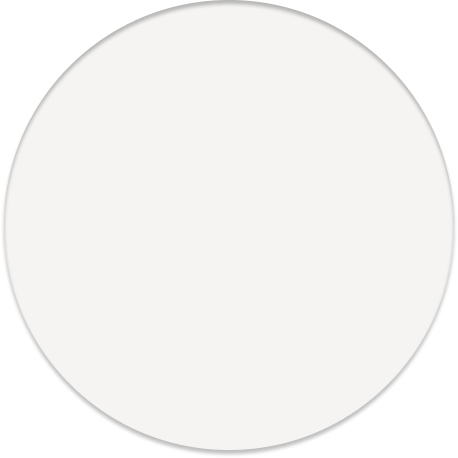

The nymph Echo falls in love
with Narcissus as he is hunting
in the forest
But she is destined to
only duplicate
the sound of others
Left with unrequited
love, she retreats into
the forest, becoming
part of it
